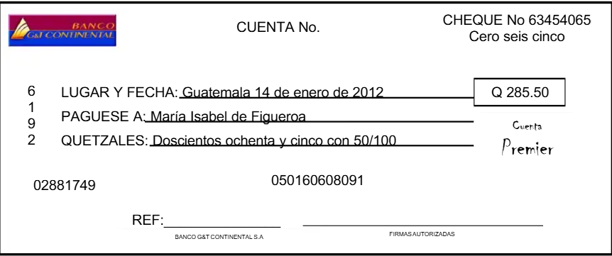
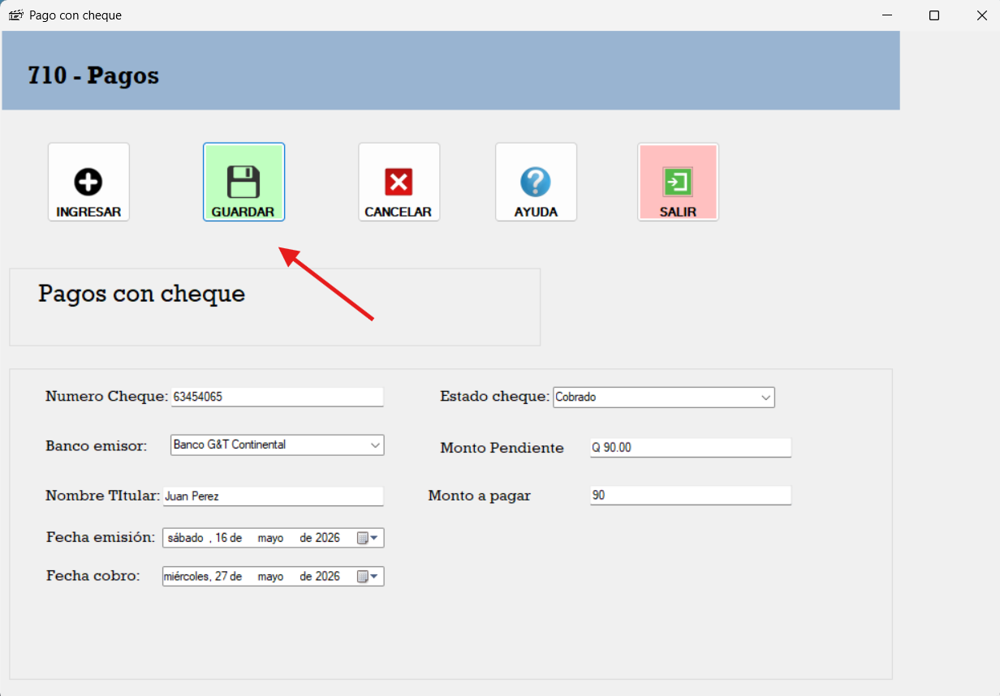
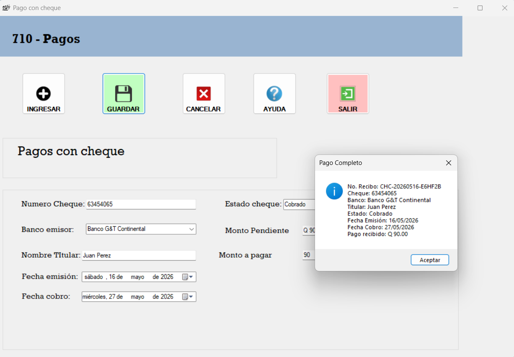

El Formulario de Pagos con cheques es una herramienta que permite registrar los pagos realizados por los clientes. A continuación, se describen los pasos para utilizar el formulario:

Se ingresa el numero de cheque, se selecciona el banco emisor , el nombre del titular la fecha de emision y cobro y el monto a pagar .

Si todos los campos están completos, se puede guardar el pago y se genera el cheque.

Al guardar se genera el cheque.